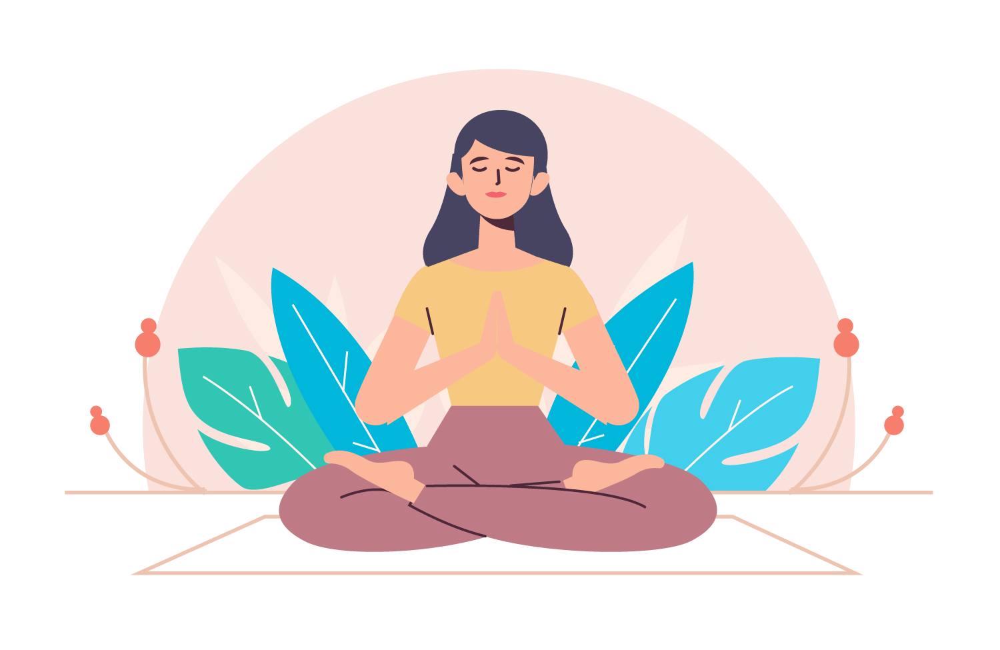
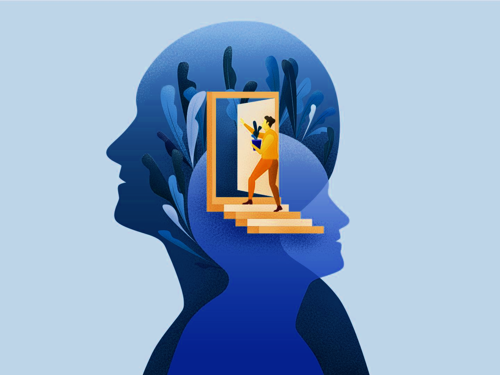
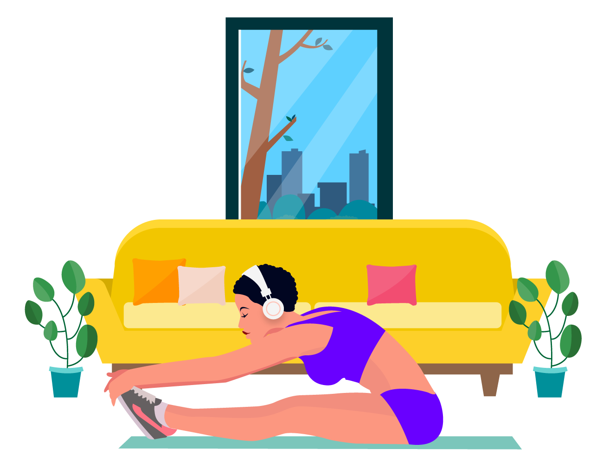

Дүрбелеу - бұл кенеттен, ескертусіз және жиі себепсіз пайда болатын және дүрбелең шабуыл деп аталатын эмоциялар толқынына ұласатын басым мазасыздық сезімі.
• Терең дем алыңыз

Дүрбелең шабуылдары сіздің тыныс алуыңызды жылдамдатуы мүмкін, бұл сіздің қорқынышыңызды күшейтеді. Тыныс алуды бәсеңдету арқылы сіз шабуылды тоқтатуға көмектесу арқылы басқа белгілерді азайта аласыз. Терең тыныс алу - бұл сіз мұрын арқылы дем шығаруға және аузыңызбен дем шығаруға көңіл бөле алатын болсаңыз - бұл өте жақсы нұсқа.
Доктор Эндрю Вайл жасаған 4-7-8 тыныс алу деп аталатын осы стратегиядан бастаңыз. Ысқырған дыбыспен ауызды толық шығарыңыз.
• Аузыңызды жауып, тыныштықпен мұрын арқылы дем алыңыз, ақылмен төртке дейін санаңыз.
•Тынысыңызды 7 секунд ұстаңыз.
•Сегізінші секундта ысқырып, аузыңыздан толық дем шығарыңыз.
•Бұл бір тыныс. Енді қайтадан дем алып, циклды тағы үш рет қайталаңыз, барлығы төрт рет.
• Кері санау жүргізіңіз

100-ден 3-ке дейін санауды бастаңыз. Кездейсоқ аралықта санау психикаңызға енуге тырысып жатқан мазасыз ойларды шоғырландыруға және жеңуге көмектеседі. Өзгерістерді қалтаңызда ұстағаныңыз жөн. Тиынды никельге қосыңыз, содан кейін екі тиын қосыңыз және т.б. Өз ойларыңызды басқарып, өзіңізден тыс нәрсеге назар аудара отырып, сіз өзіңізді тыныш сезінесіз.
• Көзінізді жұмыңыз

Кейбір дүрбелең шабуылдары түсініксіз триггерлерден туындайды. Егер сіз тез қозғалатын ортада болсаңыз, онда бұл өте көп қоздырғыш болса, бұл сіздің дүрбелең шабуылыңызды күшейтуі мүмкін.
Тітіркенуді азайту үшін дүрбелең шабуыл кезінде көзіңізді жұмыңыз. Бұл кез-келген қосымша тітіркендіргіштерге тосқауыл қоюы мүмкін және тыныс алуға назар аударуды жеңілдетеді.
• Тыныш жерді табыңыз

Көріністер мен дыбыстар дүрбелең шабуылды күшейте алады. Мүмкін болса, тыныш жер табуға тырысыңыз. Бұл жақын тұрған қабырғаға сүйену үшін бос емес бөлмеден шығу дегенді білдіруі мүмкін.
Тыныш жерде отыру ақыл-ой кеңістігін тудырады және тыныс алуға және дүрбелең қиындықтарын жеңудің басқа стратегияларына назар аударуға көмектеседі.
• Жерге қосу

Жерге қосу тағы бір пайдалы әдіс. Айналаңызда көруге болатын 4 нәрсені, қолмен ұстауға болатын 3 нәрсені, иіс сезетін және 1 нәрсені дәмін татып көріңіз. Тағы да, өзіңіздің ойыңыздан тыс нәрсе туралы ойлауға мәжбүрлеу көп көмектеседі.
• Біреумен бұл жағдаймен бөлісіңіз

Егер дүрбелең шабуылдары көбінесе бір ортада, мысалы, жұмыс орнында немесе әлеуметтік кеңістікте орын алса, бұл туралы біреуге хабарлау және егер бұл қайталанса, қандай қолдау көрсете алатындығын айту пайдалы болады.
Егер дүрбелең шабуыл көпшілік алдында болып жатса, бұл туралы басқа адамға айту сізге көмектесе алады. Мүмкін олар тыныш жер тауып, көпшіліктен құтыла алады.
• Бақытты жеріңізді елестетіп көріңіз

Сіз ойлаған әлемдегі ең демалатын орын қайсы? Жұмсақ толқындары бар шуақты жағажай? Таудағы үй?
Өзіңізді сол жерде елестетіп, мүмкіндігінше бөлшектерге назар аударуға тырысыңыз. Саусақтарыңызды жылы құмға көміп немесе қарағайдың өткір хош иісін сезіп елестетіп көріңіз.
Бұл жер тыныш, тыныш және босаңсыған болуы керек - Нью-Йоркте де, Гонконгта да көшелер болмайды, сіз шынымен де қалаларды қаншалықты жақсы көрсеңіз де.
• Есіңізде болсын, бұл өтеді

Дүрбелең кезінде бұл сезімдер өтіп кететінін және физикалық зиян тигізбейтінін есте сақтау пайдалы, бұл қаншалықты қорқынышты болса да. Бұл қысқа мерзімді шоғырланған уайым және бұл жақын арада аяқталатын кезең екенін мойындауға тырысыңыз.
Әдетте дүрбелең шабуылдары ең жаман нүктеге басталғаннан кейін 10 минут ішінде жетеді, содан кейін симптомдар басыла бастайды.
Өзіне қамқорлық махаббаттан, ал өзімшілдік қорқыныштан туындайды.
Егер сізде дүрбелең шабуылдары болса, онда сіз олармен күресу өте қиын болатын салдары бар қорқынышты тәжірибе болатынын білесіз. Алайда мұндағы нұсқауларды орындау арқылы сіз біраз тынышталып, дүрбелең шабуылдарынан кейін жолға түсе аласыз.
• Өзіңізге мейірімді болыңыз

Алдымен, дүрбелең шабуылынан кейін өзіңізге шынымен жақсы болыңыз. Бұл өте қорқынышты, қорқынышты және ыңғайсыз, сондықтан сіз жасай алатын ең аз нәрсе - кейін өзіңізді еркелету. Суға шомылыңыз, бұйралаңыз, тіскебасар алыңыз, сүйікті фильміңізді көріңіз - демалуға және өзіңізді жайлы сезінуге көмектесетін барлық нәрсе.
• Перекусите

Дүрбелең шабуылы - бұл өте әлсірейтін тәжірибе, сондықтан тамақ сияқты негізгі қажеттіліктерді ескермеу өте маңызды. Сізге тәтті нәрсе қажет болуы мүмкін - және оны еркін жеуге болады - бірақ біз сіздің энергияңызды қалпына келтіруге көмектесетін неғұрлым қанағаттанарлық және қоректік заттарға бай нәрсе таңдауды ұсынамыз. Ұйықтау қабілетіңізге кедергі келтірмеуге кепілдік берілген осы тағамдардың бірін қолданып көріңіз.
• Ұйықтаңыз

Егер сіз өзіңізді құрғатқыңыз келсе, біз сізді кінәламаймыз. Мұнда сіз өзіңіздің денеңізді міндетті түрде тыңдауыңыз керек. Егер сіз бір жерде ұйықтай алсаңыз, оған барыңыз. Сондай-ақ, кейінірек ұйқың қаншалықты келетінін де біл. Мұны істеу үшін 30 минут бойы сілкіп алмауға тырысыңыз, ал қалғанын түнге қойыңыз.
• Достарыңызға немесе отбасыңызға қоңырау шалыңыз

Егер сіз өзіңізді жайлы сезінсеңіз, сенімді досыңызбен сөйлесіп, жаңа бастан кешкен нәрселер туралы сөйлесіңіз. Ол сізге осы ойлар мен сезімдерді өңдеуге көмектеседі, ал сіз дайын болған кезде, олардан өзіңізді алшақтатуға көмектеседі. Байланысты сақтау болашақ дүрбелең шабуылдарының алдын алуға көмектеседі.
• Назарыңызды басқа нәрсеге аударыңыз

Дүрбелең шабуылынан кейін сіздің жеке ойларыңыз бен күш-қуатыңыз сіздің алаңдаушылық пен белгілеріңізді сезінуі мүмкін. Сондықтан айналада жатып, оны талқылау әрқашан жақсы идея емес. Оның орнына сіз өзіңіздің назарын босаңсытатын тапсырма немесе хобби сияқты басқа жерде шоғырландырғыңыз келеді. Сіздің санаңызды иемдену жағымсыз ойлардан арылтады және дүрбелең сезімдерін тежеуге көмектеседі.
• Дене күйін өзгертіңіз

"Егер сіздің денеңіз физикалық тұрғыдан жауап берсе, біз оны физикалық тұрғыдан жұбатуымыз керек"
Опциялардың бірі - жай позицияны өзгерту. Егер сіз тұрып, айналаңызда жүрсеңіз, өзіңізге отырыңыз. Немесе сіз шалқаңызда жатып, шабуылдың болатынын сезсеңіз, отыруға немесе біраз айналып өтуге тырысыңыз. Бұл физикалық өзгеріс сіздің денеңізді қалпына келтіруге көмектеседі.
• 5 минут медитация жасаныз
Егер сіздің ойыңыз жүйрік болса, онда мақсатты түрде сәл медитациямен баяулаңыз. Қарапайым бес минуттық тыныс алуға көңіл бөлу керек, әсіресе егер сіз өзіңізді бақылаусыз сезінсеңіз.
Дүрбелең шабуылдары кенеттен болуы мүмкін. Олар пайда болған кезде не істеу керектігін білу олардың ауырлығын төмендетеді немесе оларды тоқтатуға көмектеседі.
Адамдар дүрбелеңнің қашан болатынын әрдайым болжай алмайды, бірақ олар болған кезде не істеу керектігін жоспарлау адамға бақылауды сезінуге және дүрбелең шабуылдарын басқаруды жеңілдетуге көмектеседі.
Дүрбелең шабуылдарының алдын алу жолдары
• Дұрыс тамақтану

Күнделікті өмір үлкенді-кішілі күйзелістерге әкелуі мүмкін. Оларды асықпай қабылдау өзіңізге қамқорлық жасаудан басталады.
• Дұрыс тамақтаныңыз. Теңдестірілген тамақтануға тырысыңыз. Сізбен келіспейтін тағамнан аулақ болыңыз, өйткені реакциялар мазасыздықты тудыруы мүмкін.
• Темекі шегуден және кофеиннен аулақ болыңыз. Олар алаңдаушылықты күшейте алады.
• Алкоголь ішпеңіз немесе заңсыз есірткі қолданбаңыз. Олар сізді тыныштандыратын сияқты көрінуі мүмкін. Бірақ олар сіздің эмоционалды тепе-теңдігіңізді тастай алады, ұйқыңызға кедергі келтіреді және дәрі-дәрмектермен қақтығысуы мүмкін.
• Сіздің ойлауыңыз
Дүрбелеңді, дүрбелеңді және агорафобияны жоюға арналған кәсіби емдеудің ең тиімді түрі терапия болып табылады. Тіпті қысқа емдеу курсы көмектесе алады.
• Когнитивті мінез-құлық терапиясы сіздің дүрбелең шабуылдарын қолдайтын немесе тудыратын ойлау үлгілері мен мінез-құлықтарына бағытталған және сіздің қорқыныштарыңызға шынайы көзқараспен қарауға көмектеседі. Мысалы, көлік жүргізу кезінде дүрбелең шабуылына ұшыраған болсаңыз, ең жаман нәрсе қандай болуы мүмкін? Сізге жолдың шетіне шығып кету керек болғанымен, сіз көлігіңізді қағып кетпеуіңіз немесе жүрек талмаңыз. Шынында да апатты ештеңе болмайтынын білгеннен кейін, дүрбелең аз қорқынышты болады.
• Дүрбелеңді бұзудың экспозициялық терапиясы қауіпсіз және бақыланатын ортада физикалық дүрбелең сезімін сезінуге мүмкіндік береді, бұл сізге күресудің сау жолдарын үйренуге мүмкіндік береді. Сізден гипервентиляцияны сұраңыз, басыңызды бір жақтан екінші жаққа шайқаңыз немесе тынысыңызды ұстаңыз. Бұл әртүрлі жаттығулар дүрбелең белгілеріне ұқсас сезім тудырады. Әр әсер еткен сайын, сіз дененің ішкі сезімдерінен аз қорқып, үрейіңізді басқарудың үлкен сезімін сезінесіз.
Зейінділік пен медитация - жағымсыз ойлармен күресуге көмектесетін басқа тәжірибелер, іс жүзінде біз не істеп жатқанымызды танып, сол ойларды позитивті ойлармен алмастыра аламыз. Біз болып жатқан жағдайдың жақсы жақтарын көріп, өзіміз басқара алмайтын нәрселерді жібере аламыз.
• Сіздің денеңіз
Өзіңізге физикалық қамқорлық жасау сіздің көңіл-күйіңізді жақсарта алады. Кейбіреулерін қолданып көріңіз:
• Үнемі жаттығу. Бұл стресстен арылтылған және сіздің көңіл-күйіңізге, ұйқыңызға және басқаларына көмектеседі. Ең көп пайда алу үшін аптасына кем дегенде 2,5 сағаттық орташа қарқынды жаттығуларға ұмтылыңыз, мысалы жаяу жүру немесе 1,25 сағаттық жаттығулар, мысалы, жүгіру немесе шомылу.
• Йога, тайчи және басқа да жай жаттығулар. Олар мазасыздықты басуы мүмкін.
• Тыныс алу жаттығулары. Сіз тыныс алу мен дем шығарудың жылдамдығын басқаруды үйренгенде, күн сайын жаттығыңыз, бұл мазасыздықты жеңілдетеді. Егер сізде шабуыл болса, сіз оны тыныштандыру үшін оған сүйене аласыз.
• Ұйқы жеткілікті. Бұл сізді күндіз грогги болудан сақтайды.
Бірқатар дәрі-дәрмектер дүрбелең шабуылын болдырмауға көмектеседі. Дәрігермен бұл сізге сәйкес келетіндігі туралы сөйлесуді қарастырыңыз.
• сіздің жұмысыңыз

Дөрекі жұмыс күні ме? Тұрақты жұмыс стрессі? Бұл кез келген адамды ашуландыруы мүмкін. Егер бұл сізге әсер етеді деп ойласаңыз, міндеттеріңіздің қалыпты жүруі үшін қолдан келгеннің бәрін жасаңыз:
• Уақытыңызды басқарыңыз. Істер тізімін жасаңыз және әр жұмысқа жеткілікті уақыт бөліңіз. Егер сізде үлкен жоба болса, оны басқарылатын бөліктерге бөліп, оларға шағын мерзімдер белгілеңіз.
• Тапсырмаларды мұқият орындаңыз, сонда оларды кейінірек түзетуге уақыт қажет болмайсыз.
• Сіздің қолыңыздан келмейтін көп жұмыс жасамаңыз. Егер сіздің табағыңыз тым толып кетсе, басшыға қалай басымдылық беру керектігін тексеріңіз (тыныштықпен).